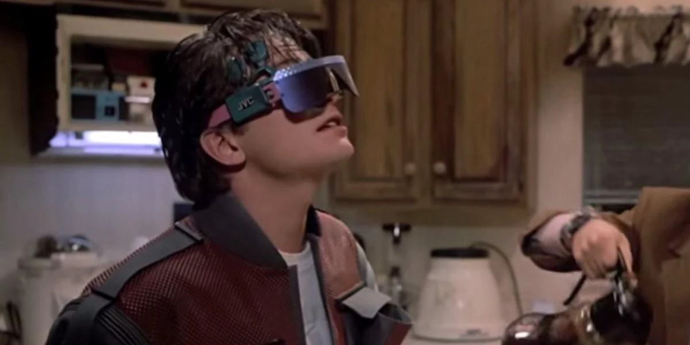
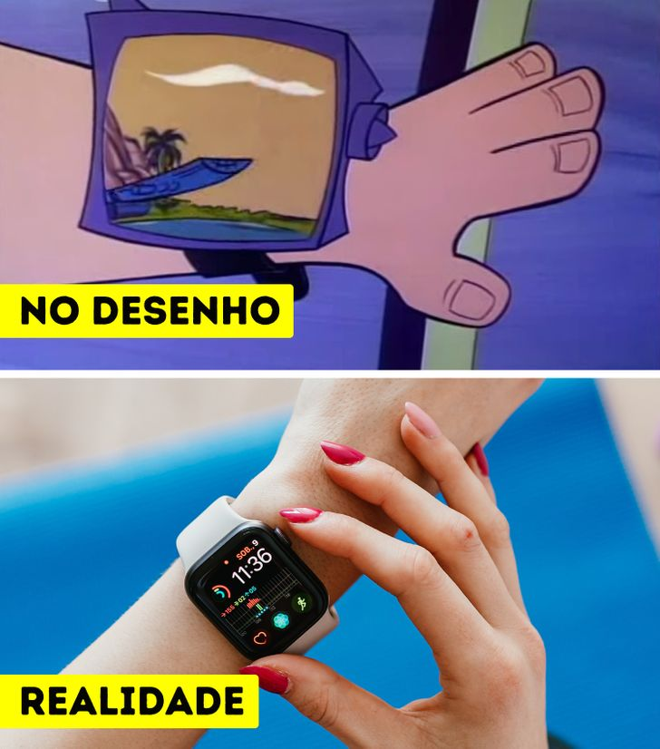
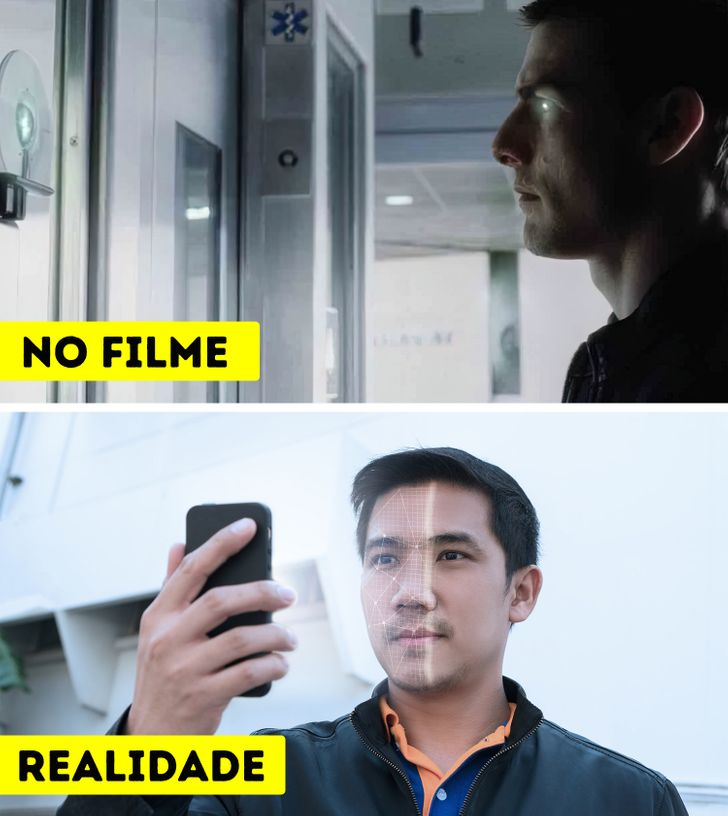

Filmes e Series
Filmes que Previram nossas Tecnologias Atuais
Óculos Inteligente (DE VOLTA PARA O FUTURO 2 - 1989)
Sucesso nos cinemas, o filme De Volta Para o Futuro 2 acertou em cheio várias das mudanças tecnológicas que aconteceriam no século XXI. Como os óculos de realidade virtual, que podem reproduzir tanto uma animação computadorizada, quanto um cenário ao vivo de algum canto do mundo, dando a sensação de que a pessoa realmente está naquele lugar.
Relógio Inteligente (Os Jetsons - 1962)
Vivendo nos anos 2062, Os Jetsons nos apresentou um futuro tecnológico, com objetos que pareciam, de certa forma, bem irreais e impossíveis de acontecer, porém mesmo sem imaginar, muitas daquelas coisas que apareceram durante o desenho animado, já fazem parte da nossa realidade. Uma delas é o smartwatch (relógio inteligente), que além de mostrar as horas, também tem funções como monitorar o batimento cardíaco, contar o número de passos por dia, mostrar mensagens, notificações, tocar músicas, entre outras.
Reconhecimento Facial (Minority Report: A Nova Lei — 2002)
Escanear o rosto como forma de comprovar a identidade, isso já era possível no filme futurista Minority Report, de 2002, ao apresentar como seria o mundo 52 anos depois. Hoje em dia, através de um software, uma câmera escanea a face de uma pessoa, usando a imagem como uma assinatura eletrônica, assim como é feito com a biometria digital, evitando assim fraudes de terceiros. Além disso, esse reconhecimento facial está presente em bancos digitais, filtros de redes sociais, desbloqueio de tela de smartphones, entre outros.